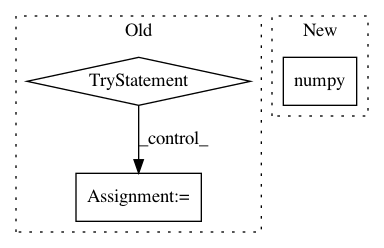

28f6dbec4bee2572fa7f94445d63cebb2de6dc9b,bin/tfr_hdf5.py,,read_tfr,#Any#Any#,93
Before Change
seqs_1hot.append(seq_1hot)
targets.append(targets1)
try:
next_datum = sess.run(next_op)
except tf.errors.OutOfRangeError:
next_datum = False
seqs_1hot = np.array(seqs_1hot)
targets = np.array(targets)
return seqs_1hot, targets
After Change
for seq_1hot, targets1 in dataset:
// TEMP!
if si % 2 == 0:
seq_1hot = seq_1hot.numpy()[0].astype("uint8")
targets1 = targets1.numpy()[0].astype("float16")
seq_1hot = seq_1hot.reshape((-1,4))
targets1 = targets1.reshape((-1,num_targets))
In pattern: SUPERPATTERN
Frequency: 3
Non-data size: 3
Instances
Project Name: calico/basenji
Commit Name: 28f6dbec4bee2572fa7f94445d63cebb2de6dc9b
Time: 2019-09-27
Author: drk@calicolabs.com
File Name: bin/tfr_hdf5.py
Class Name:
Method Name: read_tfr
Project Name: arviz-devs/arviz
Commit Name: 6b7ac72472c9d549dea45f35669e876c4c8ee2e9
Time: 2019-10-31
Author: fehiepsi@gmail.com
File Name: arviz/data/io_pyro.py
Class Name: PyroConverter
Method Name: posterior_to_xarray
Project Name: ray-project/ray
Commit Name: 22ccc43670dac93eb7fe81520a84cf3979d05693
Time: 2020-04-06
Author: sven@anyscale.io
File Name: rllib/utils/test_utils.py
Class Name:
Method Name: check